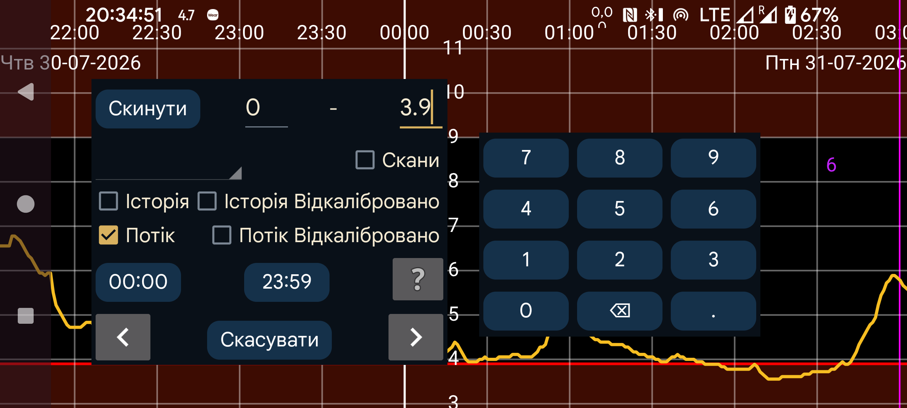

ar be de es fr hi it ja nl pl pt ru tr uk uz zh en
Пошук дає змогу знаходити значення глюкози й введені числа.
Пошук виконується для значень між указаними числами. Наприклад, діапазон 10–999 знаходить значення від 10 до 999.
Значення глюкози поділяються на сканування, історію й потік.
Сканувати: значення, показане одразу після сканування. Пошук необроблених сканувань.
Історія: пошук необроблених історичних значень. Це періодичні вимірювання, збережені в датчику й передані до програми. FreeStyle Libre 2 зберігає значення кожні 15 хвилин і передає їх через NFC. FreeStyle Libre 3 зберігає значення кожні 5 хвилин і передає їх через Bluetooth.
Калібрована історія: пошук каліброваних історичних значень.
Потік: пошук необроблених потокових значень — періодичних хвилинних вимірювань, які датчик FreeStyle Libre 2 надсилає програмі через Bluetooth.
Калібрований потік: пошук каліброваних потокових значень.
Якщо ви вводили дані про інсулін, їжу або активність, їх можна знайти, вибравши відповідну мітку у списку та задавши потрібний діапазон чисел, наприклад їзда на велосипеді від 50 до 100.
Також можна вказати час доби , який вас цікавить. Наприклад, для пошуку гіпоглікемій між 22:00 і 07:00 натисніть перше поле часу, яке спочатку показує 00:00, установіть 22:00, а друге змініть на 07:00. Також потрібно вибрати «Потік» та/або «Історія» й задати діапазон від 0 до 3,9 mmol/L (70 mg/dL).
Торкання Стрілка починає пошук у відповідному напрямку.
Скинути повертає всі параметри пошуку до початкових значень.
У Налашт. у розділі Числові етикеткиможна вибрати мітку, наприклад Вуглеводи, пов’язану з прийомами їжі. Якщо вибрати цю мітку у вікні «Нова сума»,з’явиться кнопка «Їжа» . Після натискання можна скласти прийом їжі з інгредієнтів. Якщо вибрати цю мітку тут у списку, у верхній частині екрана з’явиться поле, де можна вказати інгредієнт для пошуку й, за потреби, його мінімальну кількість.